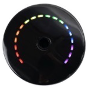

Prysm iO™
Your Daily Nutrition Tracker—Measuring Carotenoids, a Biomarker of Healthy Aging.

At a Glance
Why You'll Love It™
- Track your carotenoids level without blood test.
- High carotenoid intake is correlated to healthy aging.
- Stanford Medicine research shows high Prysm scorers have a younger biological age.
Who Is Prysm iO™ Designed For
- The Supplement Skeptic: Verify that your daily diet and supplements are actually absorbing into your tissues.
- The Busy Executive: Get a 15-second, non-invasive snapshot of your cellular defense without blood draws or lab delays.
- The Everyday Athlete: Measure how training, sleep, and nutrition impact your oxidative recovery over time.
- The Longevity Seeker: Track a validated biomarker of healthy aging and build a data-driven routine that lasts.
- The Health & Fitness Leader: Equip your clinic or studio with an instant, visual diagnostic tool that drives client retention.
How Much To Invest
- HK$2,500 per device
- One-time hardware investment with zero ongoing software fees. Equip your clinic, studio, or personal routine with instant bio-diagnostics—ready to deliver actionable cellular scores from day one.